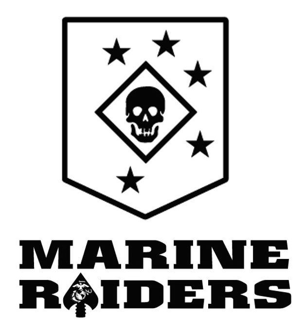

<div class="textcontainer">
<p class="margin"> </p>
<h3>Week 8: CNC Milling</h3>
<p class="margin"> </p>
<div class="flexrow">
<a id="btn" href="wk8.zip" download>Download my files from this week!
</a>
</div>
<p class="margin"></p>
<h4>Assignment: Make Something With CNC</h4>
This week we were tasked with making something with the CNC. I decided I wanted to make something involving my old military logo. I found a tutorial on youtube on how to turn an image into a dxf file. I used this website https://convertio.co to convert an old logo I have on my computer into a DXF file. Once the file was converted I downloaded the file and uploaded the file into autocad.
<p class="margin"> </p>
<div class="class\">

</div>
<p class="Marine Raider Logo"></p>
<p class="margin"> </p>
<div class="class\">
<img src="mark 2.png" width= "75%" alt="Marine Raider Logo in fushion">
</div>
<p class="DXF version of Marine Raider Logo"></p>
Once the image was uploaded into fushion, I was ready for the next step. It was now time to create tool paths.
</div>